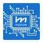
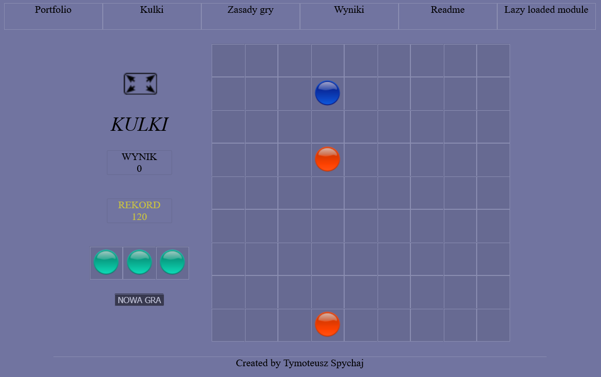

<div class="portfolio_wrapper">
    <div class="main_column">
        <div class="header">
            <div class="summary">
                <h1>Tymoteusz Spychaj</h1><br>
                <a class="link" href="https://www.linkedin.com/in/tymoteusz-spychaj-201347304" target="_blank">Mój Linkedin</a><br>
                <a class="link" href="https://github.com/Tymek35/Projects" target="_blank">Mój Github</a>
                <p>Jestem programistą full-stack posiadającym doświadczenie zarówno w technologiach frontendowych jak i backendowych. W technologiach frontendowych mam najwięcej doświadczenia z frameworkiem Angular, przez co nieobcy jest mi HTML, CSS, SCSS, javascript i typescript. Z technologii backendowych mam największe doświadczenie z Pythonem, SQLem i node.js. Podczas pracy z Pythonem używałem django, django rest framework, celery oraz Dockera. Zawsze przykładam dużą wagę do jakości tworzonego przeze mnie oprogramowania. Uczestniczyłem przy tworzeniu strony PWN <a class="link" href="https://libra.ibuk.pl/ksiazki" target="_blank">https://libra.ibuk.pl/ksiazki</a>.</p>
            </div>
            <div class="image_div">
                
            </div>
        </div>
        <div class="section experience_section">
            <div class="section_header experience_header">
                <h2>Doświadczenie</h2>
            </div>
            <div class="job1">
                
                <p><b>Full-stack Developer</b>, ImpiCode sp. z o.o.<br>12.2022 - 04.2024</p>
            </div>
            <div class="job2">
                
                <p><b>Frontend Developer</b>, ImpiCode sp. z o.o.<br>02.2019 - 07.2020</p>
            </div>
        </div>
        <div class="section education_section">
            <div class="section_header education_header">
                <h2>Wykształcenie</h2>
            </div>
            <div class="job1">
                
                <p><b>Fizyka</b>, licencjat<br>2019 - 2022</p>
            </div>
            <div class="job2">
                
                <p><b>Informatyka</b>, przerwane po drugim roku<br>2017 - 2019</p>
            </div>
        </div>
        <div class="section technologies">
            <div class="section_header technologies_header">
                <h2>Technologie</h2>
            </div>
            <div class="technologies_wrapper">
                
                
                
                
                
                
                
                
                
                
                
            </div>
        </div>
        <div class="section info">
            <div class="section_header info_header">
                <h2>O tej stronie</h2>
            </div>
            <div>
                <p>
                    Ta strona została stworzona za pomocą frameworku Angular i jej kod można zobaczyć w moim repozytorium
                    na githubie w folderze Angular/kulki. Poza obejrzeniem strony z portfolio można tutaj zagrać w prostą
                    grę logiczną - <a class="link" routerLink="/kulki">Kulki</a>. Zapraszam do gry oraz zapisania
                    swojego wyniku w bazie danych obsługiwanej przez API napisane w django oraz postawione w Dockerze!
                    Kod API można też zobaczyć na moim githubie w folderze Python/kulki_api. Poniżej screenshot z gry.
                </p>
                
            </div>
        </div>
    </div>
</div>
